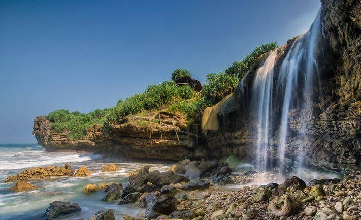
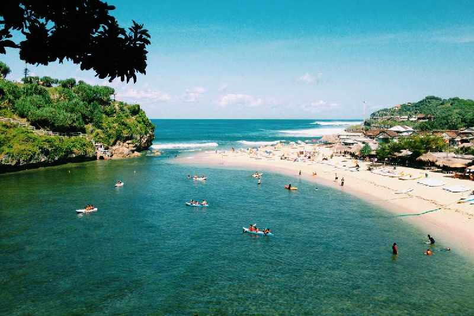
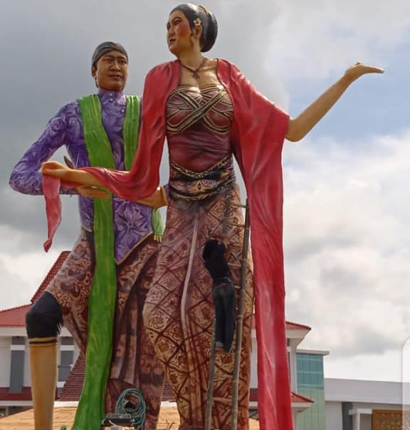

Tentang WISATAKU
Perkembangan penduduk di daerah Gunungkidul itu didengar oleh raja Mataram Sunan Amangkurat Amral yang berkedudukan di Kartosuro. Kemudian ia mengutus Senopati Ki Tumenggung Prawiropekso agar membuktikan kebenaran berita tersebut. Setelah dinyatakan kebenarannya, Tumenggung Prawiropekso menasehati R. Suromejo agar meminta ijin pada raja Mataram, karena daerah tersebut masuk dalam wilayah kekuasaannya.

Gunung Kidul
"Layanan Kami
Pada waktu wilayah yang sekarang ini bernama Kabupaten Gunungkidul masih merupakan hutan belantara, terdapat suatu desa yang dihuni oleh beberapa orang pelarian dari Majapahit. Desa tersebut adalah Pongangan, yang dipimpin oleh R. Dewa Katong yang merupakan saudara raja Brawijaya.Setelah R Dewa Katong pindah ke desa Katongan 10 km utara Pongangan, puteranya yang bernama R. Suromejo membangun desa Pongangan, sehingga semakin lama semakin ramai. Beberapa waktu kemudian, R. Suromejo pindah ke Karangmojo.
R. Suromejo tidak mau, dan akhirnya terjadilah peperangan yang mengakibatkan dia tewas. Begitu juga 2 anak dan menantunya. Ki Pontjodirjo yang merupakan anak R Suromejo akhirnya menyerahkan diri, oleh Pangeran Sambernyowo diangkat menjadi Bupati Gunungkidul I. Namun Bupati Mas Tumenggung Pontjodirjo tidak lama menjabat karena adanya penentuan batas-batas daerah Gunungkidul antara Sultan dan Mangkunegaran II pada tanggal 13 Mei 1831. Gunungkidul (selain Ngawen sebagai daerah enclave Mangkunegaran) menjadi kabupaten di bawah kekuasaan Kasultanan Yogyakarta. Mas Tumenggung Pontjodirjo diganti Mas Tumenggung Prawirosetiko, yang mengalihkan kedudukan kota kabupaten dari Ponjong ke Wonosari.
Hubungi Kami
Tata cara menghubungi kami hanya melakukan telepon atau menggunakan chat via whatsapp.Selain itu dapat mendapatkan informasi dari website di contact.
Sosial Media


Wisata Alam
Wisata Alam yang terdapat di Gunung Kidul ini berbagai macam antaranya adalah Taman Bunga Nawari,Pantai Kukup,Goa Kindul,Kebun Bunga Amarilis.
Pantai
Pantai yang terdapat di gunungkidul yang terpopuler adalah Pantai Krokoh,Sedahan,Wediombo,Nguluran dan banyak lagi
Budaya
Budaya Gunung Kidul yang terkenal adalah Rasulan merupakan sebuah kegiatan yang dilakukan dengan tujuan untuk mengungkapkan rasa syukur kepada Tuhan atas semua nikmat yang sudah diberikan. Syukuran istilah sederhananya.